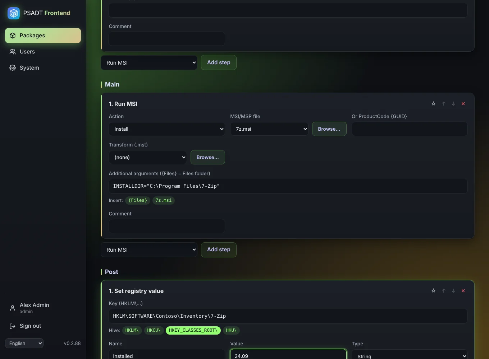
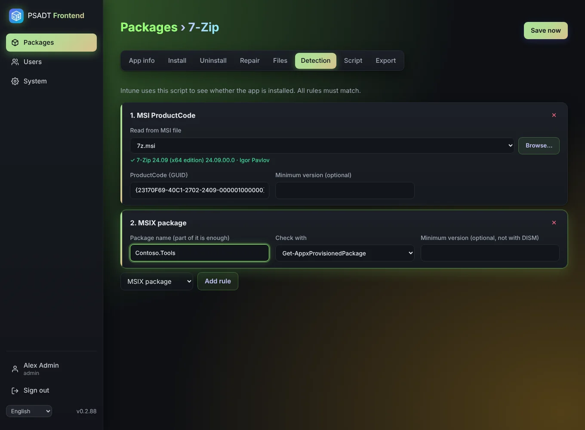
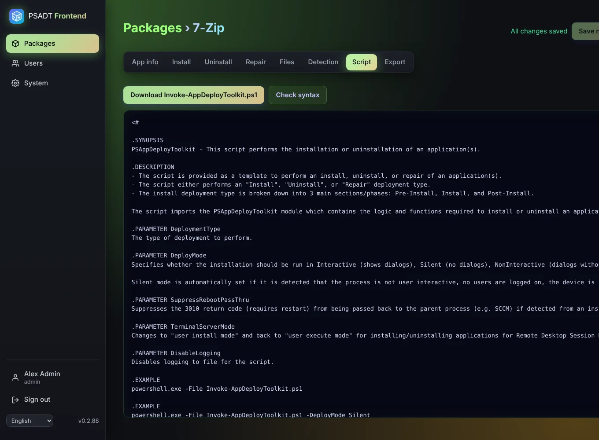
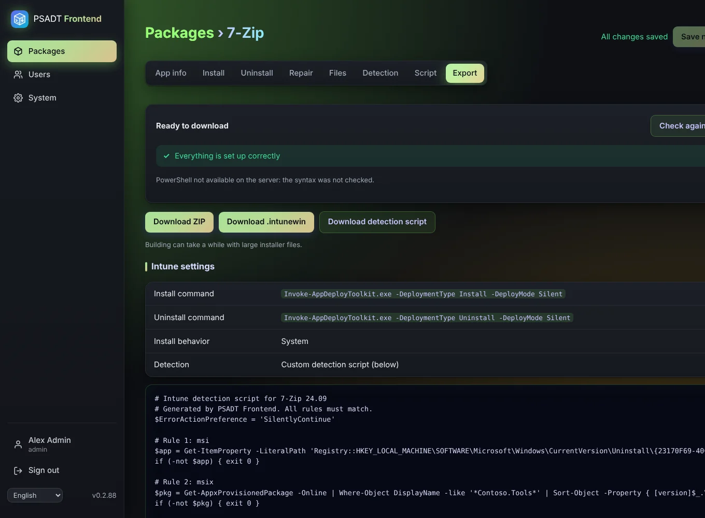
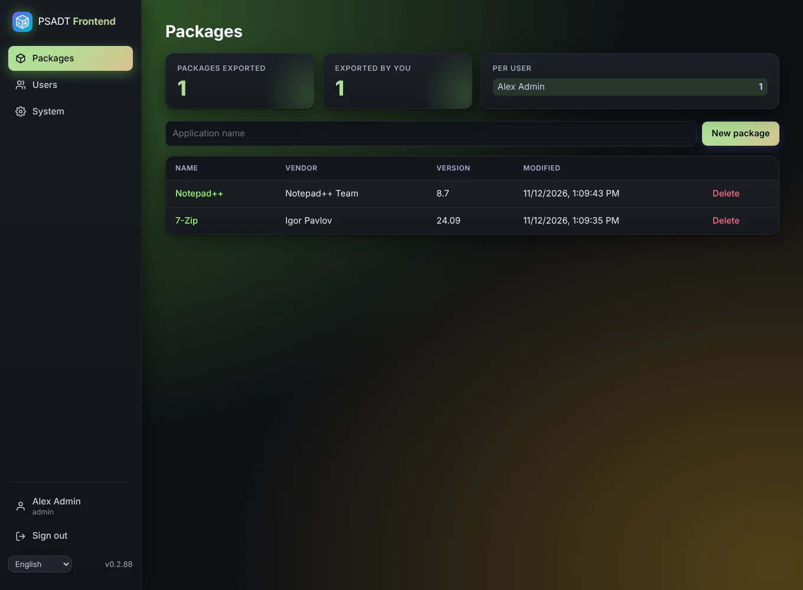
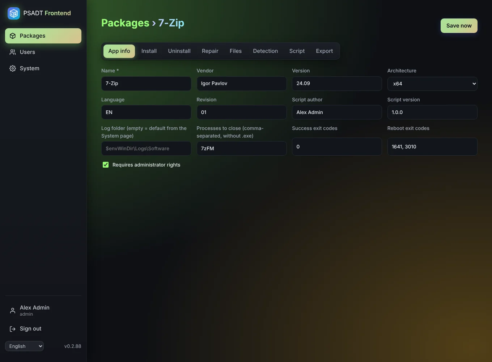
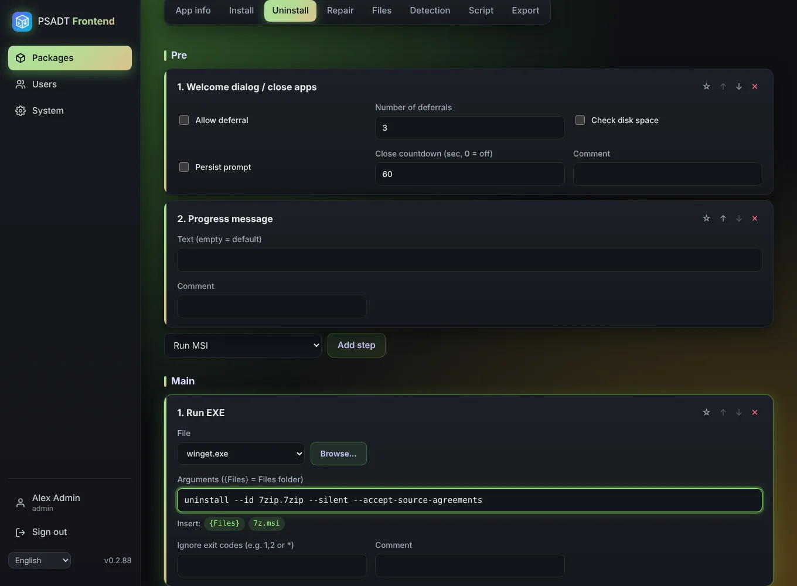
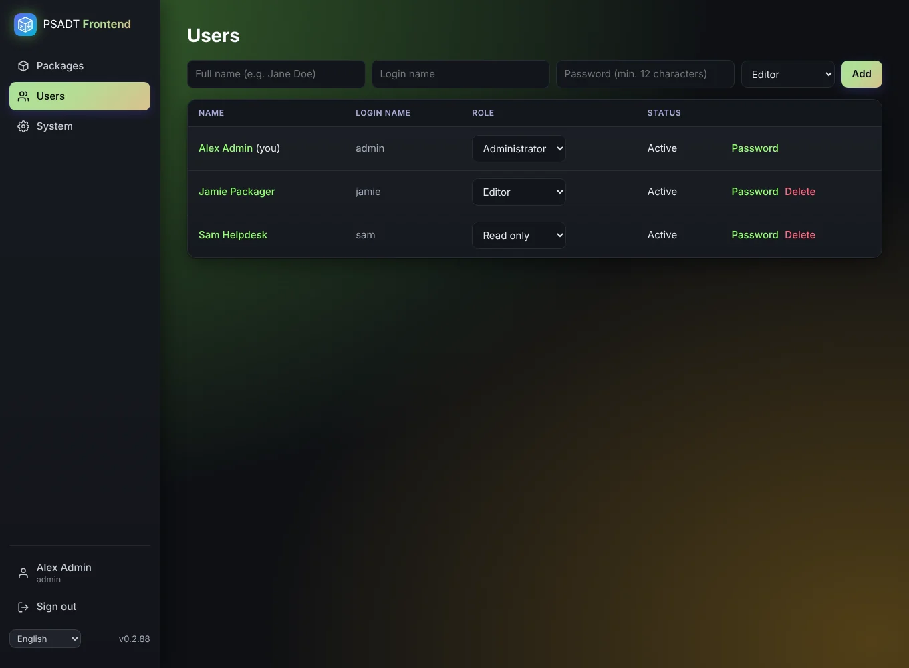
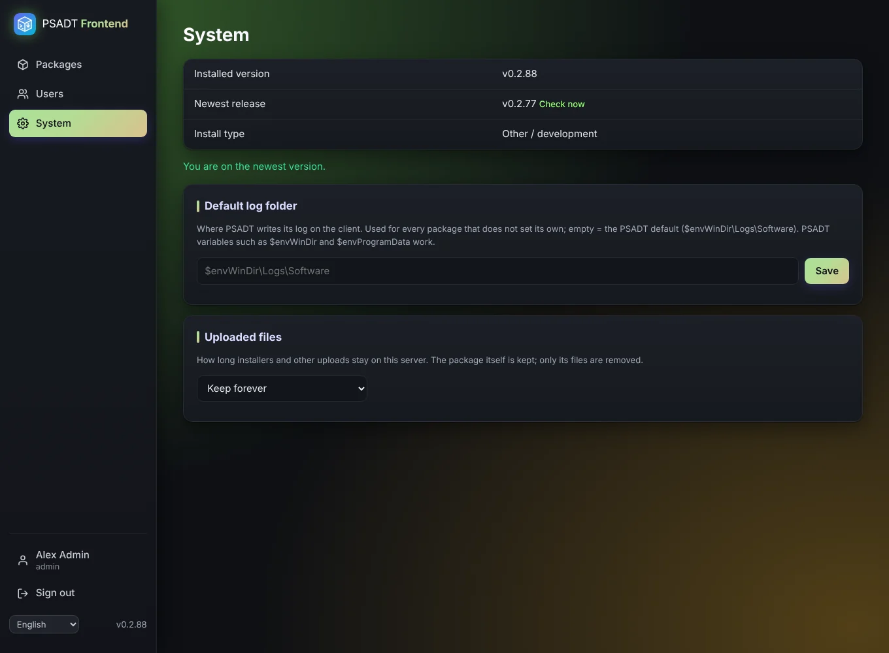

PSADT Frontend is a self-hosted web app that turns an installer into a complete PSAppDeployToolkit package and an Intune .intunewin, in minutes and straight from your browser. No Windows build machine, no copy-pasting scripts, no forgotten detection rules.

PSAppDeployToolkit is the gold standard for reliable Windows deployments. But writing and maintaining those scripts by hand is slow, error-prone and only a few people on the team can do it.
Built around the official PSAppDeployToolkit 4.1.8 template, so the result looks exactly like a script an expert would write by hand.
Welcome dialog, close apps, run MSI or EXE, uninstall by name, registry, files and custom PowerShell. Change the order with ↑ ↓, even across Pre, Main and Post.
Download the full PSADT package or a ready-to-upload Intune Win32 file, with progress and the exact install and uninstall commands.
MSI ProductCode, file version, registry (all hives) or MSIX. Read the ProductCode from the MSI itself. The script is generated for you.
Missing files, invalid settings or PowerShell syntax errors block the export. Warnings tell you what's worth a second look.
Use winget, msiexec, dism and friends without uploading them, and insert {Files} paths with one click.
Save any step as a snippet and reuse it in every package. Your team's best practices, one click away.
Administrators, editors and read-only users. Each with their own language, and export counters per person.
Everything is saved as you type. Removed a step by accident? Undo puts it right back.
The System page tells you when a new version is out and updates the LXC install with a progress bar. Release notes in plain language.
Upload the MSI, click Browse, and PSADT Frontend reads the ProductCode, version and manufacturer from the file itself. The Intune detection rule is filled in for you.

See the generated Invoke-AppDeployToolkit.ps1 at any time. It follows the official v4 template, so anyone who knows PSADT can read it, and you can check its syntax with one click (it is only parsed, never run).

The Export tab gives you the .intunewin, the detection script and the exact commands to paste into Intune. Nothing to look up, nothing to forget.

The step-by-step guide walks you through all of it with 7-Zip as the example.
Type the app name and click New package.
Vendor, version and the processes to close during the install.
MSI, EXE, MSIX or anything else. Large files are no problem.
Pick Run MSI, choose the file with Browse, and you're done. Same for uninstall.
Read the ProductCode from the MSI, or add a file or registry rule.
Download the .intunewin and the detection script, and add the app in Intune.
A calm, dark interface that stays out of your way. Click a screenshot to enlarge it.





Free, open source and self-hosted. Your installers never leave your network.
Run on the Proxmox host. You get the familiar community-scripts menu; the admin password is shown at the end.
bash -c "$(curl -fsSL https://raw.githubusercontent.com/Starf0x/PSADT-Frontend/main/ct/psadt-frontend.sh)"
Use the image ghcr.io/starf0x/psadt-frontend:latest, port 8000, and a volume for /data.
docker run -d --name psadt-frontend -p 8000:8000 \ -v /mnt/user/appdata/psadt-frontend:/data \ -e PSADT_COOKIE_SECURE=false \ ghcr.io/starf0x/psadt-frontend:latest
Then open http://<your-server>:8000 and sign in as admin. Full details in the installation guide.
No. PSADT Frontend runs on Linux and builds both the ZIP and the .intunewin itself. You only need Windows to test the package, and of course on the PCs you deploy to.
Yes. It's open source on GitHub. There's no account, no cloud and no licence key. It only sends an anonymous daily "I'm running" check-in (version and a random id), which you can switch off with PSADT_USAGE_OPTOUT=1.
The official PSAppDeployToolkit 4.1.8 template (v4). The generated script follows that template exactly.
Of course. The Custom PowerShell step inserts your code as is, and the syntax check catches typos before you download.
Yes: Nginx Proxy Manager, Traefik, Caddy, Zoraxy or Cloudflare. Uploads are sent in 5 MB pieces, so proxy size limits don't get in the way.
Sessions live in HttpOnly cookies, every change needs a CSRF token, passwords are hashed with argon2 and accounts lock after failed attempts. The container runs as non-root on a read-only filesystem.
Install PSADT Frontend today and let the whole team build reliable PSAppDeployToolkit packages.